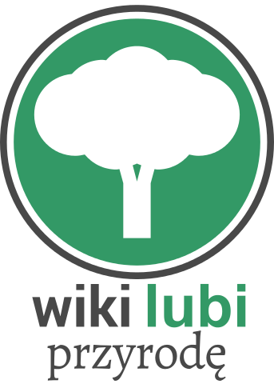

konkurs Stowarzyszenia Wikimedia Polska
Wiki Lubi Przyrodę 2015 to konkurs fotograficzny którego celem jest sfotografowanie dziedzictwa przyrodniczego znajdującego się na terenie Polski oraz przesłanie prac do repozytorium Wikimedia Commons. Zdjęcia można nadsyłać w dniach 1–31 maja 2015.
Dzięki niemu z jednej strony powiększamy bazę zdjęć na wolnych licencjach potrzebnych m.in. w Wikipedii, z drugiej chcemy zwiększać świadomość oraz wiedzę dotyczącą ochrony przyrody. Po kilku latach udanych konkursów pod szyldem Wiki Lubi Zabytki uznaliśmy, że tematyka przyrodnicza jest również warta swojego konkursu.
Konkurs jest częścią międzynarodowej inicjatywy pod nazwą Wiki Loves Earth. Po raz pierwszy konkurs o tematyce przyrodniczej odbył się w maju 2012 roku na Ukrainie. W 2014 roku odbyło się już 15 konkursów Wiki Loves Earth na czterech kontynentach: w Europie, Azji, Afryce oraz Ameryce. 3000 osób z całego świata przesłało ponad 70 000 zdjęć.
W Polsce konkurs organizowany jest po raz pierwszy. Pieczę nad nim sprawuje Stowarzyszenie Wikimedia Polska.
Konkurs jest w trakcie przygotowań, niebawem opublikujemy więcej informacji, w tym zakres konkursu oraz jego regulamin. Zapraszamy do obserwowania naszego profilu na Facebooku, gdzie publikować będziemy przydatne informacje dla konkursowiczów.